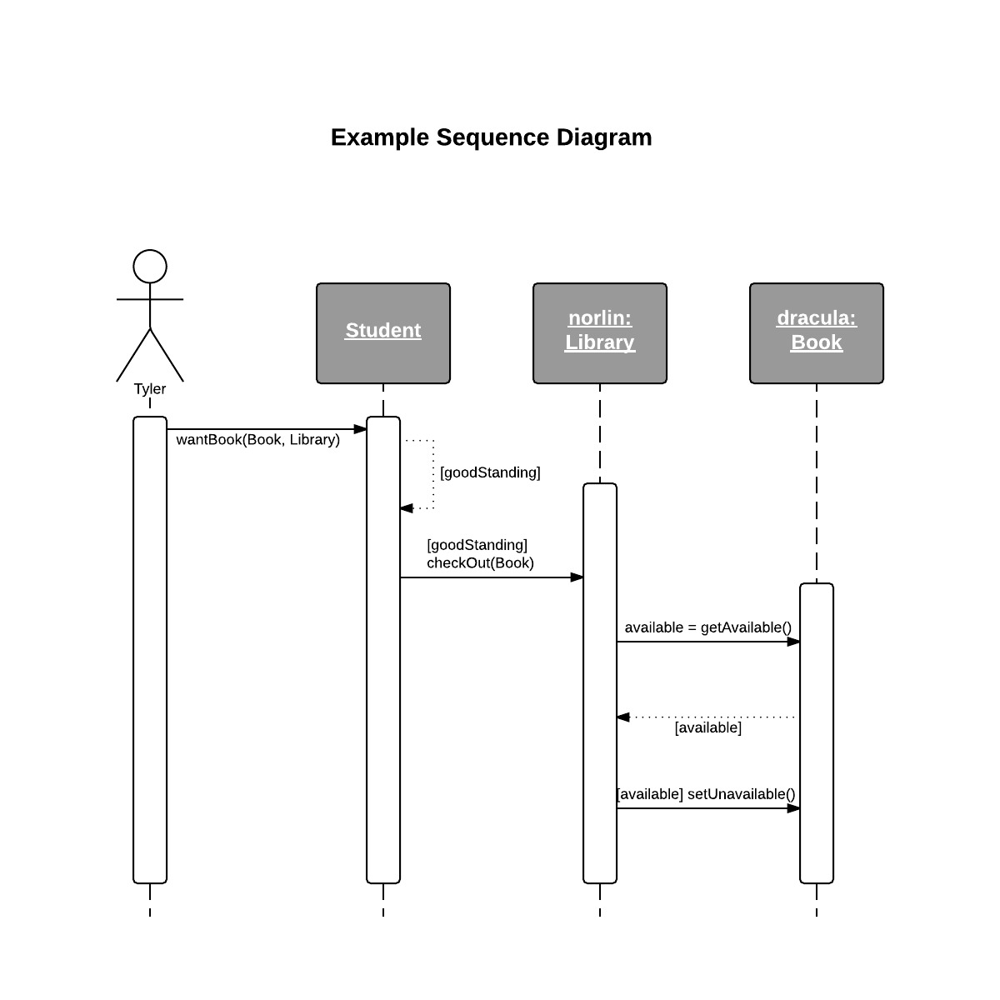
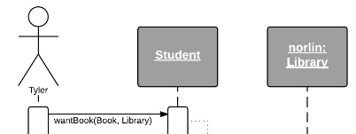
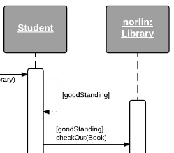
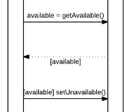

A sequence diagram models the exchange of messages between actors, classes, and objects. Messages are how objects communicate with each other in objected-oriented programming. Messages allow one object to access the attributes and operations of another object. This message exchange makes sequence diagrams dynamic like an activity diagram. But it is a lower-level than activity diagrams. Sequence diagrams are at a low-level like class diagrams in that they both specify classes and objects.
class Student {
boolean goodStanding;
void wantBook(Book book, Library library) {
if (this.goodStanding)
library.checkout(book);
}
}
class Library {
List books;
void checkout(Book book) {
if (book.getAvailable)
book.setUnavaible();
}
}
class Book {
boolean isAvailable = true;
boolean getAvailable() {
return isAvailable;
}
void setUnavailable() {
isAvailable = false;
}
}

Sequence diagrams are read from the top down. Interactions that are lower on the diagram happen after those interactions that are at the top. Notice the things at the top of the diagram. The stick figure represents an actor on the system. The boxes represents classes. These can take the form class or object: class depending on if we want to specify the object or just the general class. The dotted line is a lane for that class. The rectangle surronding the dotted line is the life line of the class. The activity of the class begins and ends with the life line. We begin this example by the actor sending a message to the student class to tell it that the actor wants a book from a library.

Next in the example, the student class sends a message to itself (this.goodStanding). If this message is true, the student class then sends a message to the norlin object to access its checkout(Book) method.

Once the norlin object receives the checkout message, norlin then sends a message to check if that particular book object is available. In this case, the object is the dracula book. Dracula then sends a message back to norlin about dracula's availablity. If norlin receives a message that dracula is available, norlin then will send a message back to set dracula's available attribute to false.

Finally, let's put all we've learn together to see how diagrams can describe design patterns.
Or return to the table of contents.